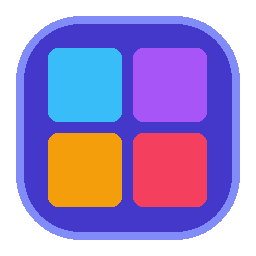

Icon Studio
v2.2.4
파일을 열거나 창 위로 끌어다 놓으세요
💻
시스템
전체 선택
📁 파일 열기
ⓘ 정보
📥
바이너리 또는 DLL 파일을 이곳에 끌어다 놓으세요
EXE, DLL, MUN, CPL, SCR, OCX 형식의 윈도우 리소스를 초고속으로 분석합니다.
내 컴퓨터에서 파일 찾기
Icon Studio Pro UHD
v2.2.4 (Build 2.2.4.0)
×
⚡
초고속 Go 엔진
: 대용량 리소스(shell32, imageres)도 0.1초 내 병렬 파싱
🛡️
스마트 UHD 마스터 팩
: 256px 누락 시에도 최고화질 7종 멀티레이어 자동 재구성
💎
포트 미사용 순수 네이티브
: 충돌 걱정 없는 완전한 독립형 단일 실행기
🚀
Windows 11 .mun 자동 리졸브
: System32 리소스 파일 투명하게 연결
폴더 열기